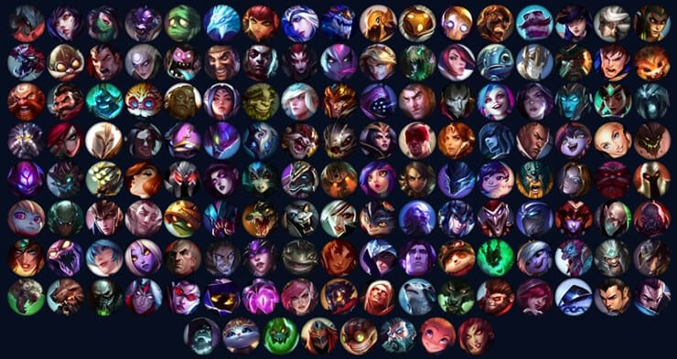

W grach typu MOBA, jest wiele konceptów które mi się podobają, jak i takich które pomagają mi wyłączyć komputer. Zaczynając od tych drugich żeby zakończyć pozytywnym tonem, powinni wprowadzić testy na inteligencję do gier tego typu, pewnie bym nie przeszedł ale przynajmniej bym wtedy nie grał w ... to coś. Podstawowe czynności których gracze mający kilkaset czy więcej godzin nie potrafią zapamiętać zawsze mnie zdumiewają, codzienne coś nowego. Często gracze ci są tylko w twoim zespole a nie w przeciwnym ponieważ dlaczego mieliby być u przeciwnika, żeby było mu trudniej? Ale to już kwestia podejścia „somsiad zawsze ma lepiej”, więc pewnie tylko mi się tak wydaje. Ale miałem pisać o tym co lubię, a nie o tym co mi się nie podoba, więc teraz zacznę pierwszą kategorię.
Lubię kiedy jednak tych graczy którzy nie wiedzą co się dzieje system dobierania wrzuci do przeciwnej drużyny, jest prościej. Ale nie chodzi tutaj tylko o wygrywanie a jako że gry MOBA są drużynowe, można zagrać z kolegami. Przyjemnie jest zagrać z kolegami wieczorem, przestać myśleć co się robi i po prostu żartować,to jest najprzyjemniejsza część tych gier drużyna, do tego jest ogromny wybór postaci, każda posiada kilka lub kilkanaście „skórek” i własne umiejętności, historię i sposób grania, dla każdego coś się znajdzie. Bez robienia rozprawki tak mogę podsumować plusy i minusy tych gier.
